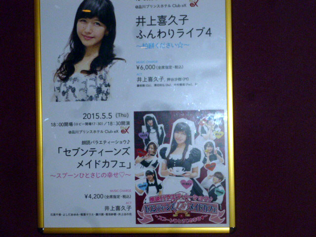
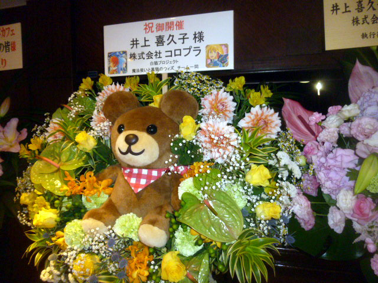
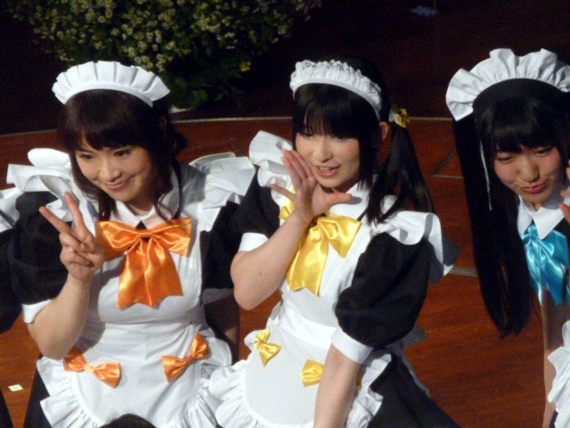

井上喜久子
ふんわりライブ４
〜柏餅ください〜
＆
Ｓｅｖｅｎｔｅｅｎｓ’ Ｍａｉｄ Ｃａｆｅ
オフ
おことわり
このレポはあくまで僕が遊んだ記録であり、その中にイベントの感想があるだけなのです。
だから行く前のぐだぐだな様子や終わってからの描写もありますが御了承ください(笑)
２０１６／５／５
品川プリンスホテル
０１：１２ｐ．ｍ
前夜から夜勤。
急いで帰宅し何とか９０分の仮眠をとったのはいいがやや出遅れて待ち合わせ場所に。
寝る前にコンビニのおにぎり食べてビール飲んでたけど（笑）起きてからは時間がなく、品川駅でパン食べただけ。
でも結局は余裕があり。
それなら駅そばくらい食べればよかった（笑）
まとめてチケットを取ってくれていたたまさんに、立て替えてもらっていたチケット代と引き換えにチケットを受け取る。
あらかじめお釣りのいらないように用意していたのだが、向こうは向こうでお釣りを想定していたらみんながみんな「きちんと丁度」支払ったらしく、財布が膨れ上がってきたらしい。
さしあたってコミケサークル参加でちゃんとお釣りを用意していたら、一般参加者も小銭を用意していて、サークル側の財布もパンパンになるそれに近い（笑）
あれ、終盤で万札来るとむしろ財布薄くできて助かるんだよね（笑）
喜久子さんイベントの時の定番。全身白。
それゆえに座り込むことができず（笑）
夜勤明けできつくて座りたかったというのに。
さすがの晴れ女神さまっ。見事な好天。
それでいて風が吹いてて気持ちのいい状態。
ここはいつもいい風が吹くなぁ（笑）
しばらくたむろしてたけど時間になり入場。

グッズを買いに。
いつもなら売り子しているアネモネーゼの皆さん。
けどこの日は出演者。予想通り売り場にはいない。ちょっと残念。
写真とティースプーン。星型ライト（柏餅バージョン）だけと思ったら残りのＴシャツも勧められる。
大抵着ないで終わるから外していたし、サイズも怪しかったが逆にＸＬのみとなって結局全部セット。

Ｃｌｕｂ ｅＸ
０１：５５ｐ．ｍ
何度か来ているこの会場。
けどバルコニー席は初めて。
いつもは間近で喜久子さん見たくて一階席なんだけど、今回は夜勤明けでの参加で寝落ちが怖く。
逆にそれでも何とかなるこちらに。
よく飲み会の時にポツンとした一部屋あてがわれると「隔離席」と表していたが、とうとうイベントでも……そんな印象（笑）
いや。隔離席はあながち間違いでもない。
「無法地帯」と書いて「フリーダム」読ませる感じ（笑）
いろいろエピソードをご紹介したいが、関係者からの報復が恐ろしいので差し控えさせていただきます（笑）
二時になり喜久子さん登場。
衣装を見てティンと（笑）来た。
白地に緑。柏餅か（笑）
オープニングナンバーは「チョキの神さま」とご本人のものから。
オリジナル。しかも作詞作曲だけどとちった（笑）
が、それより驚かせたてくれたのは客席に降りてのじゃんけん。
今回のステージはいうなれば「センターステージ」で。
真ん中に円形の舞台があり、それを取り囲むように客席が。
曲が終ってご挨拶。
「ホーム」ということで「ルーチンワーク」は「正式バージョン」
「あれあれ？ 声が小さいぞ」も（笑）
ここで副題の「柏餅ください」のくだりを説明。
これはかつての「らんま１／２」での企画アルバム「歌暦」は各月をテーマに曲を作ってと。
イベント開催の五月はシャンプーの歌う「猫飯店メニューソング」だけど、ラストに喜久子さん演じる天道かすみ（ある意味では喜久子さんの愛称の「お姉ちゃん」のもとになったキャラ）が「オチ」で「柏餅ください」と中華料理店でと（笑）
それにちなんて。
ここで叫ぶ。「時計忘れちゃった」と（笑）
気を取り直して次の曲。「らくだに乗るとは思わなかった」を歌っている最中に、スタッフさんの手でさりげなく時計が置かれていたのが、二階席からはよく見えた（笑）
切ない系で二曲続ける。
「トゥリンリン」がご本人の作詞作曲なら「きみのうた」は今は天国にいるであろう岡崎律子さんの提供。
この後で柏餅にまつわる話に。
こしあんと粒あんのどちらが好みかという流れでバンドメンバー紹介（笑）
普段愛称で呼んでて、ちゃんとした名前が出てこない喜久子さん（笑）
いや。笑えないか。こちらもふだんハンドルで呼んでいるから本名の出てこない人も多いし（笑）
切ない系の後は「幸せ」をテーマに二曲。
これまた岡崎律子さんの作った「しあわせのワルツ」と、喜久子さん自身が作った「合言葉はしあわせ」と先の二曲と対になるがごとく。
どこらからか星型ライトも。
さすかに新型の「ホワイト＆グリーン」名付けて柏餅カラー（笑） それが多いが前回の黄色もちらほら。
僕や村人さんはダブル（笑）
客とのやり取り「コール＆レスポンス」を「キャッチ＆リリース」と言ってしまう喜久子さん。
楽屋でアネモネのつっこみエースがざぞかし突っ込みいれたかったのではなかろうかと（笑）
昭和歌謡のコーナーに。
「上を向いて歩こう」『見上げてごらん夜の星を』と坂本九さんの曲で続けて。
岩崎宏美さんの「聖母（マドンナ）たちのララバイ」を聞くとどうにも「火曜サスペンス劇場」が脳裏に（笑）
松任谷……否っ！ この時点では「荒井由実」さんの「やさしさに包まれたなら」は『魔女の宅急便』でもおなじみ。
中島みゆきさん「時代」を聞くとどうにも「関口宏のあっとらんだむ」か脳裏に（笑）
この曲の時に円形ステージが回りだして。
前半ラストは「後ろ向きのスキップ」で締め。
２０分間の休憩に入る。
以前は着替えの時間を映像でつないでいたけど、休憩にしてトイレに行けるようになったのはかなり助かる。
で、せっかくなんでバルコニー席なのを利用して、影で今回買ったＴシャツにフォームチェンジ（笑）
Ｃｌｕｂ ｅＸ
０３：１５ｐ．ｍ
後半スタート。
今度の衣装はやや派手に「赤と黒」のワンピース。
こちらではバンドではなくカラオケで。
「魔法少女オーバーエイジ」から「魔法と雨のエトワール」を。
続いて「カールフレンド（♪）」から「夢中トラベラー」はやはり演じた天都かなたの曲だろうか？。
ややアンバランスな時間師配分で後半はもうラストに差し掛かり。
今までありそうでなかった「出演作メドレー」に。
キャラソンでなく、喜久子さんの出演したものの主題歌と。
ある程度は年代順の様子。
以下列記する。
「じゃじゃ馬にさせないで」（らんま１／２）
『ブルーウォーター』（ふしぎの海のナディア）
「Ｍｙ Ｈｅａｒｔ言い出せない Ｙｏｕｒ Ｈｅａｒｔ 確かめたい」（初期ＯＶＡ版「ああっ 女神さまっ」）
「不器用じゃなきゃ恋はできない」（神秘の世界エルハザード）
「嵐の中で輝いて」（機動戦士ガンダム 第０８小隊）
「Ｓｈｏｏｔｉｎｇ Ｓｔａｒ」（おねがいティーチャー）
「ｊｅｗｅｌｒｙ」（奥様は魔法少女）
「トライアングラー」（マクロスＦ）
「ＴＨＩＳ ＬＯＶＥ」
メドレーのラストは何？
そんな質問がなぜか僕に（笑）
推測で答えたのが「女神さまっ関連の『ＴＨＩＳＬＯＶＥ』という曲らしい」と。
正解は単行本付属のＯＡＤ（Ｏｒｉｄｉｎａｌ Ａｉｍａｔｉｏｎ ＤＶＤ…講談社での呼び名）でのＥＤテーマと。
テレビじゃなきゃわからない人も多いわなぁ。
これで退場。ストップウォッチの準備はいいか？
何秒で「アンコール」に出てくるか測りたいっ（笑）
意外に長く待って二分ほどで登場。（笑）
曲はイントロでわかる。
「がんばって負けないで」
これがないと喜久子さんイベントは締まらない。
アンコール恒例の「ほっちゃんばなし」だけど、ついに本人登場。
愛娘。井上ほの花１８歳（若い若い）がステージに。
で、なんと掟破りの「ママの話」を（笑）
「なにもないところでよくコケる」と。
確かに初耳。だが、何の意外性も感じないのはなぜだろう（笑）
正真正銘のラストは母と娘で「夢見るコスチューム」を。
こっちのイベントは割とトチリが目立ったけど、この後に別の『ステージ」があるのを思うと確かにオーバーキャパは言い過ぎでも、いっぱいいっばいにもなるかなと。
一度客も出る。
僕は経験ないけどプロ野球のダブルヘッダーもこんな感じだったのかな（笑）
近くのフードコート
０５：０４ｐ．ｍ
時間つぶしもありフードコートに移動。
思い思いの飲み物を手に思い思いの場所に。
僕は東方不在さんと延々特撮の話を（笑）
見慣れない顔が一人。
どうも松崎さんの知り合いだったらしい。
ご挨拶したかったがチャンスがなく。
このころサイトを移転して、名刺も新調していたから丁度良かったのだが。
時間が来たので移動する。
Ｃｌｕｂ ｅＸ
０６：１４ｐ．ｍ
通しチケットである。
なので昼の部と全く同じ座席。
それならそのままいたかった気も（笑）
今度は「朗読バラエティショウ』ということになっている。
題して「Ｓｅｖｅｎｔｅｅｎｓ’Ｍａｉｄ Ｃａｆｅ 〜スプーン一杯の幸せ〜」
オフィスアネモネオールスターによる朗読劇。
オープニングは全員で歌う。
おおおっ。藤川さん。ツインテールだっ。
その衝撃波で壁に叩きつけられる僕。
ここが二階席でなかったらやばかった。
ふう。見事な破壊力だ（笑）
なお個人の感想であり個人差があります（笑）
ツインテ好きには効果大だったけど。
設定はとある装置を作動させると誰でも「１７歳」になるというそれで。
なのでみんな「１７歳」で（笑）
まず二人。よしだあゆみさんは「いなか娘」に設定と。役名は「ミカ」。
そして藤川茜さんは源氏名こそ「ひよこ」とかわいらしいが、二つ名が「小さな暴君」と。
アネモネ唯一の突込み要員。突込みエース。どＳとまで言われていたが、ついに暴君とまで（笑）
しかも「エクスカリバー」（射程距離 Ｅ パワー Ｃ スピード Ｂ 精密動作性 Ａ 成長性 Ａ）を持ってるじゃあねぇかっ（笑）
なおイメージカラーを定めたようで。
よしださんはオレンジ。藤川さんは「ひよこ」だからか黄色。巨人・阪神である（笑）
ああ。みかん色で「ミカ」か（笑）
次々に入店するメイドたち。
「チヒローズガーデンからのスパイ」でボーカロイドという設定の石黒千尋さんは紫のリボンで役名も「ヴァイオレット」とストレートに。
なんだかすっかりアネモネのお色気要員となっている（笑）椎葉マリエさんはイメージカラーが赤で「源氏名」も「ルージュ」と色っぽく。
事前にはギャルソン姿で「あー。さとちんはかつての山川さんポジションね」と思っていた菊池沙都さんは、実際にはメイド姿。
ただし性格設定はイケメンのまま（笑）
源氏名が「萌葱若葉」で実は失念していたイメージカラーだけど、名前といいバランスといい緑だったかも。
記憶違いでないならスカート姿は初めて見たかな？
ここで「店長」で喜久子さんが。元祖エア１７歳（笑）
「もものうえもも』それが彼女の源氏名。当然イメージカラーはピンク。
しかしトリじゃない。
迎え入れる形で期待のルーキー。井上ほの花ちゃんが「ソラ」という役名で。
彼女が出てくるなりバルコニー席の空気が変わった気が。
特に名は伏すが明らかに「近所のおじさん」状態の甘々モードに入った御仁も（笑）
「うんうん。ほの花ちゃん。大きくなったねぇ」とやたらに優しい目をしてる気が（笑）
リボンの色は水色。むしろシアンか？
すると母上様のもピンクじゃなくてマゼンタ？ ディディディディケイド（笑）
テイスティングと称していろんなドラマを演じる。劇中劇ってもの。
歌もある。ここでも星型ライトが大活躍。
プレゼントコーナー。
引き当てられた座席番号が当選者。
ここで物さんが当たったらやはり「もってる」なと思ったけど、誰も当たらなかった。
正確には一階席たけで。
そしてなんと、突然の撮影タイム。
てっきり公式のためと思いきや客が写していいと。
あれ？ 開演前に「録音・撮影禁止」と言ってなかったか？
ごく当たり前のことなんで軽く受け止めていたけど。
でもデジカメは持ってたけど（笑）
以前に藤川さんのバースデーイベントではアップしてもいいと許可されたけど、今回はそれを聞いてなかった。
ところがみんなそれをツイッターにあげてて、しかも当のアネモネーゼがリツィートしている（笑）
こりゃいいんだなと思い、こちらも載せる。

言わんとせんことはわかる。
「お前は誰のファンなんだ？」と。
大帝アドニスは言っていた。
『迷った時は心に従え』と（笑）
いや。時間があれば喜久子さんも行くつもりだったけど。
まぁ生写真も買ったし。うん。そういう意味では藤川さんのほうがレアだし。
そして終演に。見事に締めくくる。
しかしさらに出口で六人のアネモネーゼとのハイタッチ・キラキラ（笑）が待っていた。
藤川さん。表情が変わってくれた。ええ。見てましたとも。
去り際にサムズアップで「満足した」と表現して会場を後に。
和服姿の御仁が。志ら乃師匠じゃないですか！？
来ていても不思議ないけど。むしろ当然。
余韻に浸る。
しかし今回はすでに八時過ぎ。
しかも翌日は連休明けで朝から仕事の人も。
東方さんはいつもだがものさんこの時点で離脱。
それでも１２人で意外なところに落ち着く。
あきた美彩館
０８：２４ｐ．ｍ
何度か来ているＣｌｕｂ ｅＸ。
その真ん前のここ。
ずっと物販店とはかし。
居酒屋でもあったのか。
秋田県のアンテナショップで、出てくるものも当然秋田にちなんで。
久々にやります。
僕が端で。トイレ近いから出やすいところという選択だったけど、なぜか今回は一度だけで（笑）
まぁゆったりしててよかったけどそこから時計回りにスミーさん。おーくさん。松崎さん。たまさん。真魚さん。
向かいに移り村人さん。カイザー。異国くん。ｍｉｎｏさん。るいんさん。そして僕の正面に四封さんというメンツ。
指名され異国くんのシンプルな音頭で乾杯。
イベントを振り返る。
ついでに初期のあっとまんぼうまで振り返る（笑）
主に当時の「しあわせけいじばん」
０年代前半。まだネットの整備もされてなくて。
いろいろと衝突もあったぁと。
でも、その中から今こうしてここにいると。
長い間には来なくなった人もいるしね。
とはいえど喜久子さんファンだけでなくアネモネーゼのファンとの交流も今後は期待できる。
いつか藤川さんのツインテの可愛さを存分に語りある相手と巡り合えたら（笑）